Onagawa
Onagawa · Miyagi
Onagawa
Highlighted on the Miyagi map.
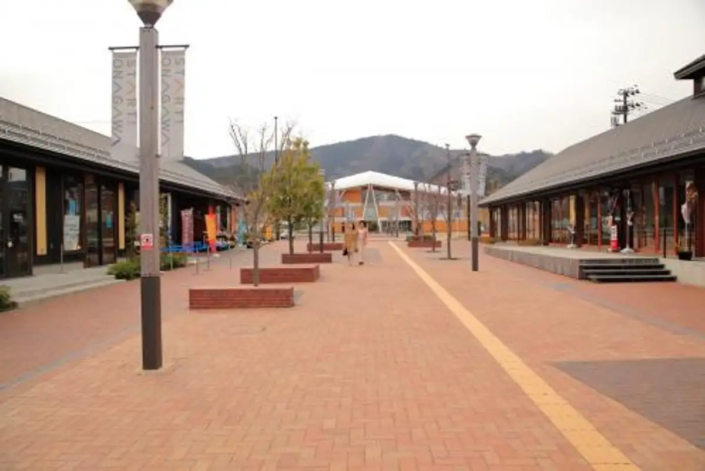
Stay
ホテル・エルファロ
ホテル・エルファロ
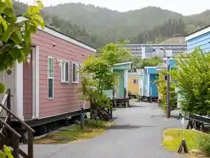
Ｓｗｉｍｍｙ Ｉｎｎ Ｏｎａｇａｗａ
Swimmy Inn Onagawa
旬の海鮮膳が食べられる宿 女川温泉 華夕美
Jun No Kaisen Zen Ga Tabe Rareru Yado Megawa Onsen Hana Yuumi
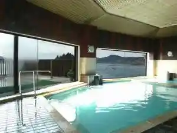
Dining
お魚いちば おかせい
O Sakana Ichiba Okasei
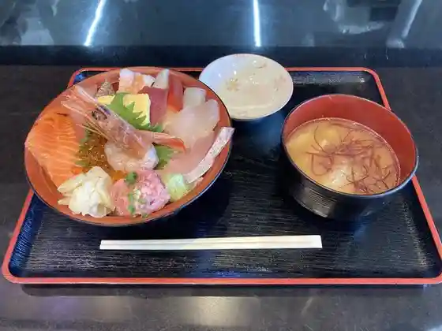
女川海の膳ニューこのり
Megawa Umi No Zen Nyuu Konori
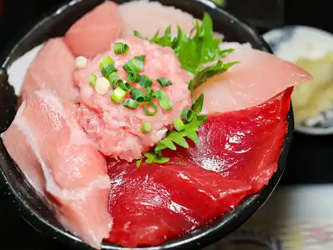
まぐろ屋 明神丸
Maguro Ya Myoujin Maru
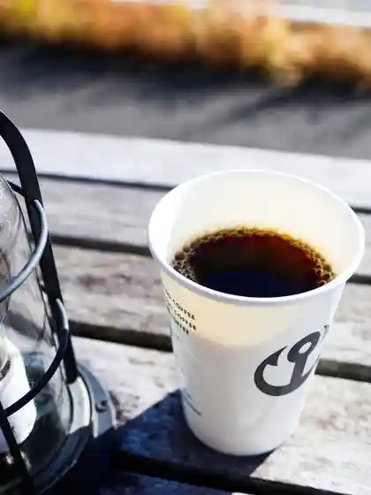
マザーポートコーヒー 女川店
Mazaapootokoohii Megawa Mise
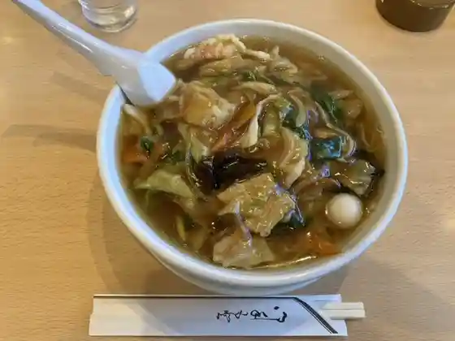
三秀
San Shuu
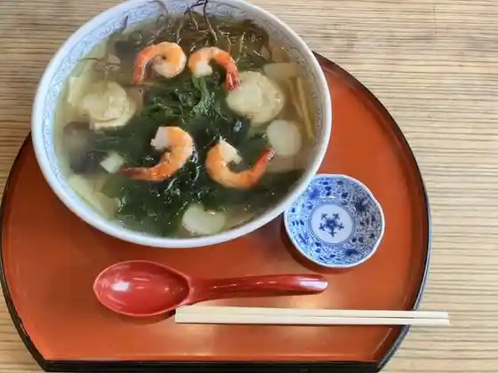
金華楼
Kinka Rou
居酒屋 典典
Izakaya Ten Ten
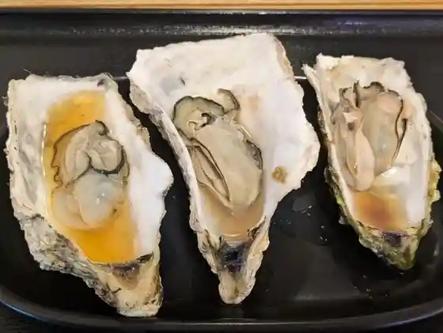
ゴザイン
Gozain
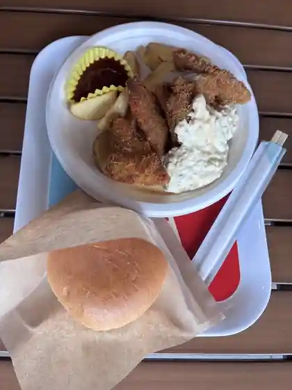
女川バーガー
Megawa Baagaa
女川温泉 華夕美
Megawa Onsen Hana Yuumi
イル ガッビアーノ
Iru Gabbiaano
高政 女川本店 万石の里
Takamasa Megawa Honten Mangoku No Sato
きらら女川
Kirara Megawa
女川魚市場食堂
Megawa Uoichiba Shokudo
ガル屋
Garu Ya
マルキチ女川浜めし屋
Marukichi Megawa Hama Meshi Ya
きらら女川 シーパルピア女川店
Kirara Megawa Shiiparupia Megawa Mise
克丸鮮魚
Katsu Maru Sengyo
ホテル・エルファロ
ホテル・エルファロ
相喜フルーツ
Sou Ki Furuutsu
片倉商店 ハマテラス店
Katakura Shouten Hamaterasu Mise
食堂 おかずや
Shokudo Okazuya
女川スーパー おんまえや
Megawa Suupaa Onmaeya
さんまのヤマホン 女川ハマテラス店
Sanmano Yamahon Megawa Hamaterasu Mise
いかや
Ikaya
GEN
GEN
ステイイン 鈴家
Suteiin Suzu Ie
やきとりぶんぶん 中華料理 中華杜華
Yakitoribunbun Chuukaryouri Chuuka Mori Hana
onagawa factory
onagawa factory
SPICE CURRY Blue Coral Reef
SPICE CURRY Blue Coral Reef
おちゃっこクラブ
Ochakko Kurabu
蒲鉾本舗 高政 シーパルピア女川店
Kamaboko Honpo Takamasa Shiiparupia Megawa Mise
女川温泉ゆぽっぽ
Megawa Onsen Yupoppo
あがいんステーション
Again Suteeshon
マリンパル女川 おさかな市場
Marinparu Megawa Osakana Shijou
セボラ
Sebora
酒飯処 かぐら
Shuhan Tokoro Kagura
バー シュガーシャック
Baa Shugaashakku
女川銀鮭広報部
Megawa Ginzake Kouhoubu
串焼きたろう
Kushiyaki Tarou
幸楽
Kouraku
カフェさくら
Kafe Sakura
そば・和食処 花菖蒲
そば・和食処 花菖蒲
Garden.shouji
Garden.shouji
女川ショコラ
Megawa Shokora
Hau'oli Deli シーパルピア女川店
Hau&39oli Deli
炭火焼き鳥おあんつぁん
Sumibi Yakitori Oantsuan
軽食キッチンきむら
Keishoku Kitchin Kimura
アンベアーレ
Anbeaare
喫茶つばめ
Kissa Tsubame
平初鮮魚店
Taira Hatsu Sengyoten
おじか
Ojika
OWL
OWL
IZAKAYA ようこ
IZAKAYA
セブンイレブン 宮城女川
Sebun'irebun Miyagi Megawa
居酒屋カフェ M
Izakaya Kafe M
居酒屋ようこ
Izakaya Youko
ファミリーマート 女川中央店
Famiriimaato Megawa Chuuou Mise
鮮冷
Sen Rei
陸前屋高橋商店
Rikuzen Ya Takahashi Shouten
Swimmy Inn Onagawa
Swimmy Inn Onagawa
道の駅 おながわ
Michi No Eki Onagawa
コミュニティスペース うみねこ
Komyuniteisupeesu Umineko
兼宮商店
Ken Miya Shouten
船場
Senba
ホテル サンライズ
Hotel Sanraizu
民宿いずしま
Minshuku Izushima
民宿 やまと
Minshuku Yamato
バー オウル
Baa Ouru
New Konori
New Konori
Yume Wo Katare Onagawa
Yume Wo Katare Onagawa
Mother Port Coffee Onagawa
Mother Port Coffee Onagawa
Sansantei
Sansantei
Cebolla
Cebolla
Flower Iris
Flower Iris
Yakiniku Koraku
Yakiniku Koraku
Dream House
Dream House
Sakura Shokudo
Sakura Shokudo
Coffee Dop
Coffee Dop
Restaurant Kobori
Restaurant Kobori
Suzukiya
Suzukiya
Western Restaurant Ribbon
Western Restaurant Ribbon
Yoshino Sushi
Yoshino Sushi
Home Run
Home Run
Azuma Shokudo
Azuma Shokudo
Shokuji Dokoro Sugure
Shokuji Dokoro Sugure
Hanabusa
Hanabusa
Omi
Omi
Of Cans
Of Cans
Onsen
Onagawa Onsen Yupoppo
Day-use hot spring beside JR Onagawa Station
Onagawa Onsen Hanayubi Baths
Guest and day-use baths at the Urashuku hot-spring hotel
Shop
Michi-no-Eki Onagawa
Road station with local seafood products and reconstruction information
Hamaterrace Local Market
Bayfront market for fresh fish and processed seafood specialties
Sights
Seapal Pier Onagawa
Brick-street commercial hub rebuilt after 2011 with shops and bay views
Onagawa Nuclear PR Center
Public information center on energy and the local plant
Sanriku Soap Studio KURIYA Workshop
Hands-on aroma soap workshop inside Hamaterrace
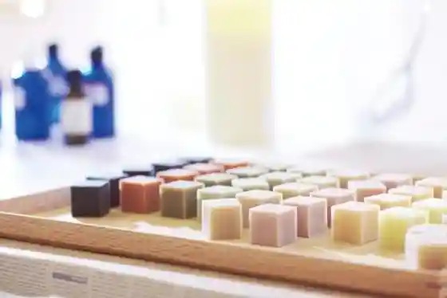
Minatomachi Ceramica Spanish Tile Workshop
Spanish-tile painting experience in Seapal Pier
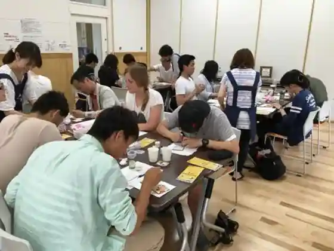
Takamasa Kamaboko Mangoku-no-Sato
Fish-cake maker base with tasting and shop in Urashuku
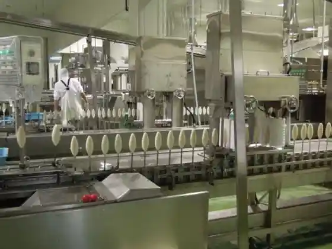
Ashijima Black-tailed Gull Colony
Island known for nesting umineko gulls in the Onagawa islets
Ejima Island
Offshore island reachable on fine-weather boat trips